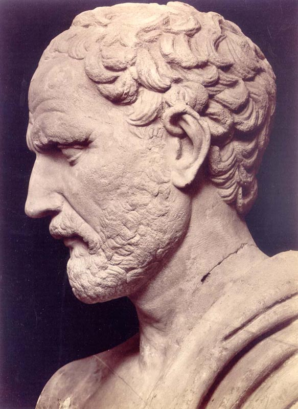

L'Homme amoureux
- Vers une relation intime
- 7 milliards de combinaisons
- Le métier de marketeur se transforme

Le monde n'attend pas
Innover dans une Startup
- Naître
- Survivre
- Grandir
- Mûrir
Valoriser l'innovation
- Assimiler, abstraire et transmettre
- Construire des outils utilisables par tous
- Anticiper les évolutions
Dans nos process
- Itératifs
- Temps réels
- Collaboratifs
- Ouverts
Dans nos valeurs

Les petites opportunités
font les grandes entreprises.
Merci
Twitter : @sylvainw